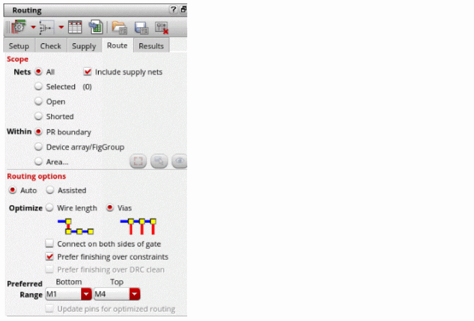

Routing in Automatic Mode
When routing noncritical nets, use Auto Routing option for selected or all nets as a quick routing solution. To do this:
- Open a design in Layout MXL.
-
Choose Window – Assistants – Routing.
Alternatively, right-click anywhere on the layout window menu bar and choose Assistants – Routing. -
Click the Route tab in the routing Assistant and in the Routing Options section select Auto.
 - Select PR Boundary or Area or Device Array/FigGroup option in the Scope section of the Route tab.
- Select either Wire Length or Vias from the Optimize field in the Routing Options section. By default, Vias is selected.
- Select Connect on both sides of gate only if needed and if there are two poly connections in the device.
- Ensure Prefer finishing over constraints is selected for better convergence. If unselected, the constraints are preferred over convergence.
- Specify the preferred routing layer range from the Bottom and Top drop-drown list.
-
Click Run signal router
.
The router completes routing the selected or all nets within the specified scope. Routing errors are reported in the CIW, which might be hidden underneath other windows. The CIW can be raised automatically by setting the following environment variable:envSetVal("ui" "raiseCIWonError" 'boolean t)
Related Topics
Configuring Device-Level Router Settings
Checking Layout Routability after Generating Grids and Running Device Placer
Finishing Routing for Signal Nets
Return to top